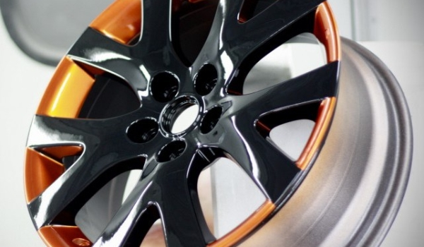

Покраска дисков
Компания предлагает необыкновенно широкую палитру оттенков, открывающую перед клиентами бесконечность просторов для полета фантазии. Компания осуществляет порошковую окраску литых дисков за 24 часа. После проведенных работ сотрудники компании гарантируют идеальное состояние дисков в течение 3-х лет. Своими руками произвести данный объем работ достаточно сложно, поэтому лучше доверить это дело специалистам.
Подробнее
